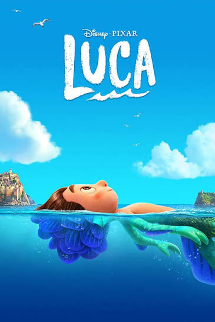
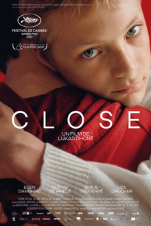
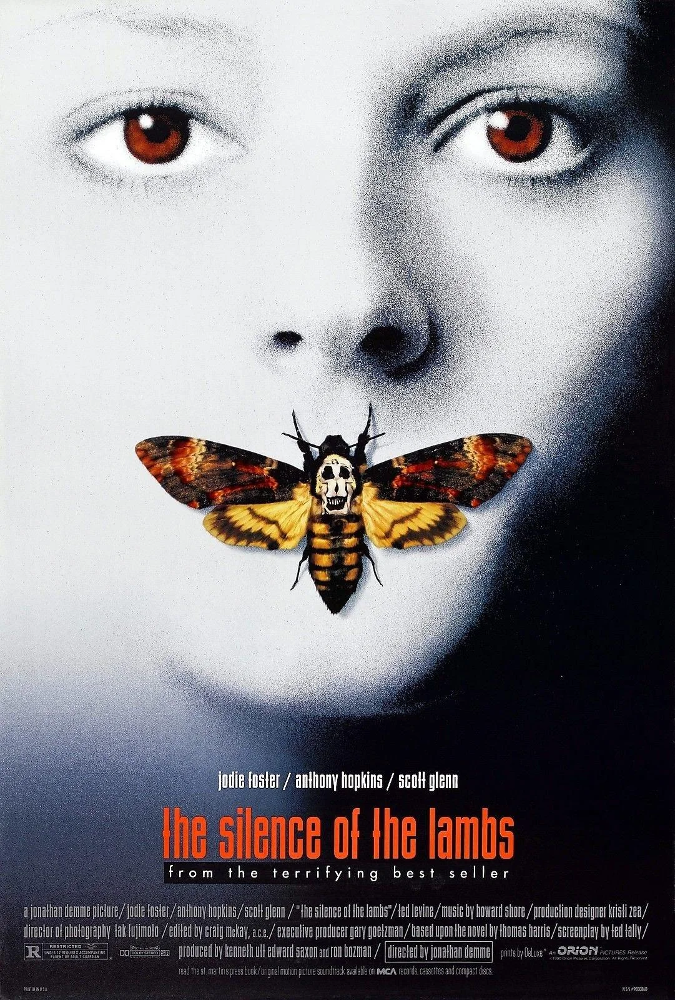

Sinopse:
Na costa de Riviera Italiana, o garotinho Luca Paguro (Jacob Tremblay) conhece um novo melhor amigo de aventuras.
No entanto, sua amizade fica ameaçada pela verdade: Luca e o amigo são monstros marinhos de outro mundo. Eles vivem disfarçados de humanos, mas o contato com a água revela suas verdadeiras formas. Por isso, manter o fato em segredo é um desafio diário.

Sinopse:
Leo e Remi são dois garotos na casa dos 13 anos de idade que têm a sua amizade repentinamente interrompida. Para compreender o que aconteceu, Leo se aproxima da mãe de Remi.

Sinopse:
Clarice Starling (Jodie Foster), agente novata do FBI, procura por um assassino que ataca mulheres jovens e depois retira suas peles. Para construir o perfil psicológico deste psicopata, recorre à ajuda de um assassino preso que agia de forma semelhante.
É o dr. Hannibal Lecter (Anthony Hopkins), um psiquiatra canibal. Lecter, de fato, pode ajudar na investigação, mas quer em troca um local mais confortável para ficar preso. E quer também se aproximar da durona Clarice, para que ela fale de seus traumas e revele seu lado vulnerável. A história mescla o horror dos crimes bárbaros com o horror psicológico que Lecter faz emergir.
Sinopse:
Viva - A Vida é uma Festa, Miguel é um menino de 12 anos que quer muito ser um músico famoso, mas ele precisa lidar com sua família que desaprova seu sonho.
Determinado a virar o jogo, ele acaba desencadeando uma série de eventos ligados a um mistério de 100 anos. A aventura, com inspiração no feriado mexicano do Dia dos Mortos, acaba gerando uma extraordinária reunião familiar.